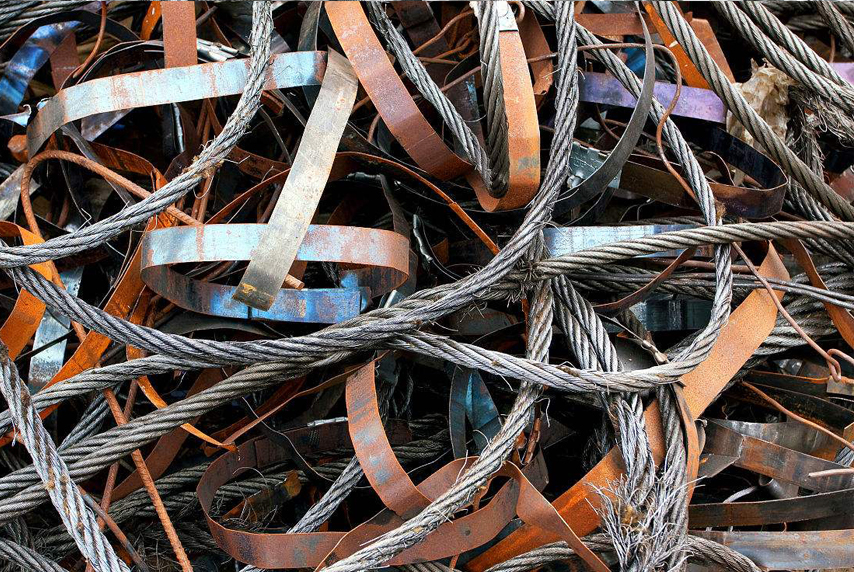

文章来源： 更新时间：2018-06-05 09:34:08
在钢铁工业生产中，最普通的材料就是钢材，常见的金属废料是屡见不鲜。在这里，小编收集了各类常见废金属材料，让大家对金属世界有一个清晰明朗的认识。整体上，金属废旧物资，可以划分为废黑色金属、有色金属、废贵稀金属、硬质合金四大类。具体的金属有：

一、 废黑色金属1、生铁，生铁分为铸造生铁和炼钢生铁，球墨铸铁用生铁三大类，属于钢铁产品原料。2、铁合金，铁合金是非金属或金属元素与铁组成的合金。按照元素种类不同，分为硅铁，锰铁，铬铁，钨铁，钼铁等。铁合金还包括两种黑色纯金属
二、 废有色金属1、有色纯金属，铜：纯铜又称紫铜，密度为8.94g/cm3,熔点为1083度,无磁性.有良好的导电,导热性能及抗蚀性,还具有很高的化学稳定性.(铜的化合物都有毒.) 铅：铅又叫青铅,外观呈蓝灰色.铅的强度和硬度极低,能用发切断,在常温下加工不会产生加硬化现象.密度为11.34g/cm3,因密度较大,常用于制造弹头.铅的电阻大,导热性差,熔点为327度,常用于制造保险丝.锡：锡是银白色而略带蓝色的金属.其密度为7.2g/cm3,熔点为232度.锡的强度低,在室温下没有加工硬化的现象.锡的塑性极好,还具有很好的抗蚀性.镍：镍是银白色金属,抛光后能长期保持美丽的光泽,密度为8.9g/cm3,熔点为1455度,在温度低于360度时有磁性.镍具有良好的电真空性能,在高温高真空中挥发很小,是电真空仪器的重要材料.
三、 废贵稀金属，贵稀金属是贵金属和稀有金属的总称.由于金和银由人民银行专营,物资部门经营的贵金属主要是铂族元素.而硒 碲 砷属稀散元素,通常称为半金属.铂：铂是银白色金属,熔点为1769度,密度为21.45g/cm3,主要用于电气仪表 化学工业及制作精密合金等用.钯：钯是银灰色金属,熔点1552度,密度12.16g/cm3,可塑性好,在贵金属中耐蚀性较差,供电气 仪表 化工工业及制作精密合金等用.铑：铑是烟灰色金属,熔点为1960度,密度为12.44g/cm3,是脆性金属.供电气 仪表 高温合金及精密合金等用.
四、硬质合金，硬质合金俗称钨钢,是一种具有高硬度,良好耐磨性,红硬性及一定的抗弯强度的工具材料.它的耐磨性比高速钢高10到20倍,红硬性也远胜于高速钢;因此硬质合金在现代化机械加工,石油煤矿山采掘,金属型材加工,纺织,化工,仪器仪表部件及国防,武器,军工等领域中得到了广泛的应用.另外:硬质合金的缺点是韧性低.因此,硬质合金刀片要镶装在钢制刀杆上(焊接或机械夹固),硬质合金模具则要装在钢制模套里.这四类废旧金属材料，总体上包括了大部分废金属，掌握这些知识，对于如何有效地运动金属将有至关重要的作用。
地址：广东省广州市天河区88号电话：400-123-4657传真：+86-123-4567
版权所有：Copyright © 2012-202X 某某公司 版权所有 粤IP*********